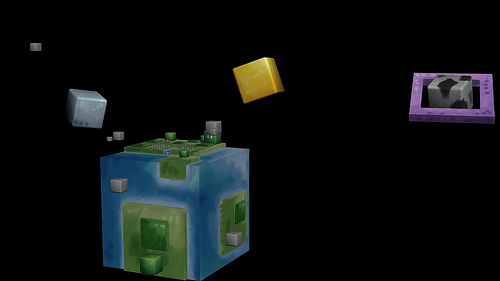
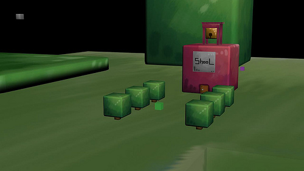

Allright, little spare time for the wicked. Been working like crazy nowadays. The list of props that need to texture is quite large. I am checking off my list texture by texture. My overall tempo is about two textures per hours depends on how advance it is. Some needs to re-texturise. The thing is it is all hand painted(or photoshop painted), meaning I do not just pick a color and tweak some adjustment, nor do I take a picture for textures. Every different object(or 3d modell) have a unique texture (well except for copies of the same object of course)
It may be time consuming, but the reward is greater. I get the look that I am after. Want it to look like a child or an amature have painted on a real life object. To “fake” a traditional paint look in a digital platform is a bit challenging, but then again it is the artistic style I am after.
I am on a good way and more then half of the props is textured. But there is still some work to be done.


Tomorrow, we have to head down to Hon-atsugi to end our apartment contract. The time flies and we are preparing our trip back home to Sweden. It is with mixed feelings to fly home. I will miss japan and people I have met here, at the same time I need to continue my work in Sweden.
Thank you for reading,
Khamla